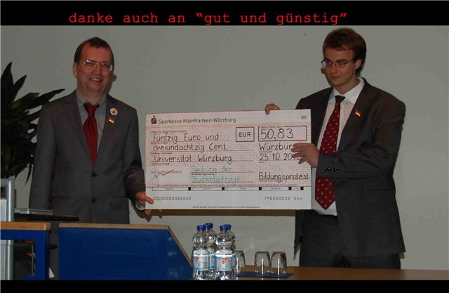

Vor über einem Jahr oder so machten wir uns daran, den so genannten Bildungsstreik in Würzburg kritisch zu beobachten, als Teil dessen wir uns damals noch sahen. Das Verhältnis kühlte mit der Zeit ab, den AktivistInnen wollten wir nicht mehr nachlaufen. Die liefen nämlich etwas zu schnell in die offenen Arme der Hochschulgruppen und der Uni-Obrigkeit, die für sie eine Art väterliche Figur war. Dafür hatten wir Verständnis und gaben ihnen ein paar Bemerkungen mit auf den Weg, was zu recht lustigen Wortgefechten in den Kommentarspalten führte. Und weil dieser Schulzeitung-Journalismus ein so unterhaltsamer Zeitvertrieb ist, tun wir das aus gegebenem Anlass wieder.
Wirklich täglich grüßt uns dieses Murmeltier namens Bildungsprotest, Marx sei Dank, nicht. Wer sich noch die Bildungsproteste im Sommersemester 2010 aus der Ferne angeschaut hatte, wähnte einen Grund zur Hoffnung zu haben, dass das Protest-Murmeltier endlich mal von seinem obrigkeitsgläubigen Geist verlassen worden und friedlich entschlafen wäre, damit es zu einem Überdenken und Neuanfang kommen könnte. Aber nein, das Zombie bewegt sich immer noch und kann noch gehörig Lärm machen. Aber eigentlich mit gutem Grund.
Die bayrische Staatsregierung hat bekanntlich neulich Sofortsparmaßnahmen verabschiedet, von denen die brave bayrische Beamtenschaft hart getroffen wird. Verwaltungsbeamte, SchullehrerInnen und PolizistInnen sind über die Sparpläne empört. Was die letzte Beamtengruppe angeht, so wollte sogar Post-Post-Prä-Post-BiKri neulich einen Vorschlag zur Kürzung der Mittel für die Würzburger Polizei der bayrischen Regierung unterbreiten. Denn wir sind hier an unserem aufstrebenden und sich dynamisch entwickelnden Standort wirklich gut versorgt und brauchen nicht mehr so viel davon. Aber die Realität in Gestalt der Landesregierung war, wie schon so oft, weit radikaler und spontaner als unser mickriger Verschwörungskreis. Wie dem auch sei, bayrische Hochschulen, diese Hochburgen des Geistes, wo die doitsche Mittelschicht sich selbst unter Anwendung wissenschaftlicher Methoden erfolgreich verdummt, werden davon auch betroffen sein. Am unseren aufstrebenden und sich dynamisch (gääähn!) entwickelnden Standort heißt das z.B. für die Universität, so weit wir verstehen, dass sie auf ca. 1,2 Mio Euro verzichten muss. Wie die Einsparungen im Konkreten aussehen werden, was das z.B. für ProfessorInnen, den so genannten wissenschaftlichen Mittelbau, für Hiwis und nicht-wissenschaftliches Personal heißt, wissen wir noch nicht. Ebenso, was es für die FH heißen wird. Falls der Bau des hässlichen Gebäudes, das am Hubland entsteht, dadurch gestoppt wird, stehen wir als Post-Post-Prä-Post-BiKri voll hinter dem Uni-Präsidenten: soll doch jemand dieses architektonische Verbrechen an Menschlichkeit stoppen. Wäre auch gut, wenn jemand dafür büßen würde, aber mensch kann ja nicht alles auf ein Mal haben (behaupten einige).

Zurück aber zu den Unzufriedenen und zutiefst Beleidigten. Aus einer Reihe von Gründen kann die deutsche Studentenschaft anscheinend nicht streiken, auch wenn sie ihre Aktionen „Streik“ nennt. Wie z.B. Holger Marcks in der „Direkten Aktion“ zeigte, gab es in der neuesten Geschichte der BRD immer wieder studentische Proteste, von denen nur ganz wenige tatsächlich Streiks waren und dementsprechend eine Aussicht auf Erfolg hatten, weil sie jemand juckten. Alles andere ist halt Humbug wie das Ab-Und-Zu-Lärm-Machen, „gemeinsam an einem Strang ziehen“, „bunte und kreative Protest-Aktionen“ und Unterwürfige-Briefe-An-Die-Uni-Leitung-Schreiben. Müssen wir an die „kreativen Aktionen“ vor Ort erinnern, oder sind sie peinlich genug, um zu wissen, was gemeint ist? Mensch kann ja wirklich stolz auf sich sein, denn mensch blieb brav. Und der Burgfriede hat in Doitschland einen hohen Wert, führt doch das Land stets einen Krieg auf dem Weltmarkt. Was „unsere Vorbilder“ an der Hochschule angeht, wenn sie nicht durch pseudo-feudale Verhältnisse der persönlichen Abhängigkeit von Vorgesetzten, den gut gespürten faktischen Streik-Verbot für BeamtInnen gehindert sind, dann durch ihre Aufgeblasenheit und ungeheure Wichtigkeit. Denn Gründe für den Aufstand gibt es eigentlich genug, und das nicht seit gestern. Von den Menschen, die zum nicht-wissenschaftlichen Personal zählen und die Verdummungsmaschine tagtäglich durch ihre Arbeit im Stand halten, hört mensch leider nicht so viel. Entweder sind sie zufrieden, oder ebenfalls den pseudo-feudalen Verhältnissen unterworfen, oder aber geoutsourced und haben somit mit der Hochschule nur mittelbar zu tun.
Als sich der Bildungsstreik in den Bildungsprotest umbenannt hatte, war das konsequent und ehrlich. Und in dem Sinne wird ja weiter gemacht: Am 23.10. gaben hohe Tiere aus der Uni-Leitung, AktivistInnen aus der Studierendenvertretung und dem Post-Audimax eine Latschdemo zum Besten. „Wir sind hier, wir sind laut, weil man uns die Kohle klaut!“ Sogar die alten Transpis mit „Kürzburg“ aus den Bildungsprotesten 2003/04 wurden ausgepackt. Das ist doch mal eine Kampfansage! Das ist doch die welterschütternde Kreativität bei der Aktion! Um einiges seriöser wirkte dagegen Herr Forchel, als er den offenen Brief an die Staatsregierung überreicht hat. Einen Absatz wollen wir mal auch zitieren:
Wow, die Drohung zeigt deutlich, wer noch streiken im eigentlichen Sinne könnte! Somit ist der gute Forchel in den Augen von Post-Post-Prä-Post-BiKri stark gewachsen. Nur verstehen wir nicht ganz, womit er der Landesregierung drohen will. Will er sich vom Freistaat Bayern lossagen? Kommt es doch noch zum Bundesland Franken, wie von alttestamentarischen Propheten vorgesehen? Oder werden die Träume etwa Paul Goodmans oder Ivan Illichs wahr und die Bildungeinrichtungen werden entstaatlicht? Ein mal im Leben (mindestens) wollen wir erleben, wie ein doitscher Beamter die Hand beißt, die ihn füttert! O, bitte! Aber bereits jetzt ahnen wir, dass der Träger unserer Hoffnungen auf die Wiederherstellung fränkischer Würde schon brav „an einem Tisch sitzen“, „Kompromisse und gemeinsame Lösungen suchen“ wird, weil „Verantwortung“ und „Sachzwänge“ bla-bla.
Tja, am 17.11. soll es weiter gehen, das Volk der Resolutionäre und die StuV blasen zum Sturm. Wenn Post-Post-Prä-Post-BiKri das amüsant genug findet, könnt ihr hier – wie gewohnt – die ganze Wahrheit über Zusammenhänge und Hintergründe erfahren. Oder auch nicht, was auch nichts Neues ist.
Wer einen Blick über den europäischen Tellerrand wagen will, kann sich hier versuchen: The University is a factory! Let’s treat it as one!
Im Auftrag von Post-Post-Prä-Post-BiKri,
der Unterfränkische Bund der Satano-KommunistInnen.
Liebe und Licht! Kraft und Saft!

1 Antwort auf „Und täglich grüßt das Bildungstier“